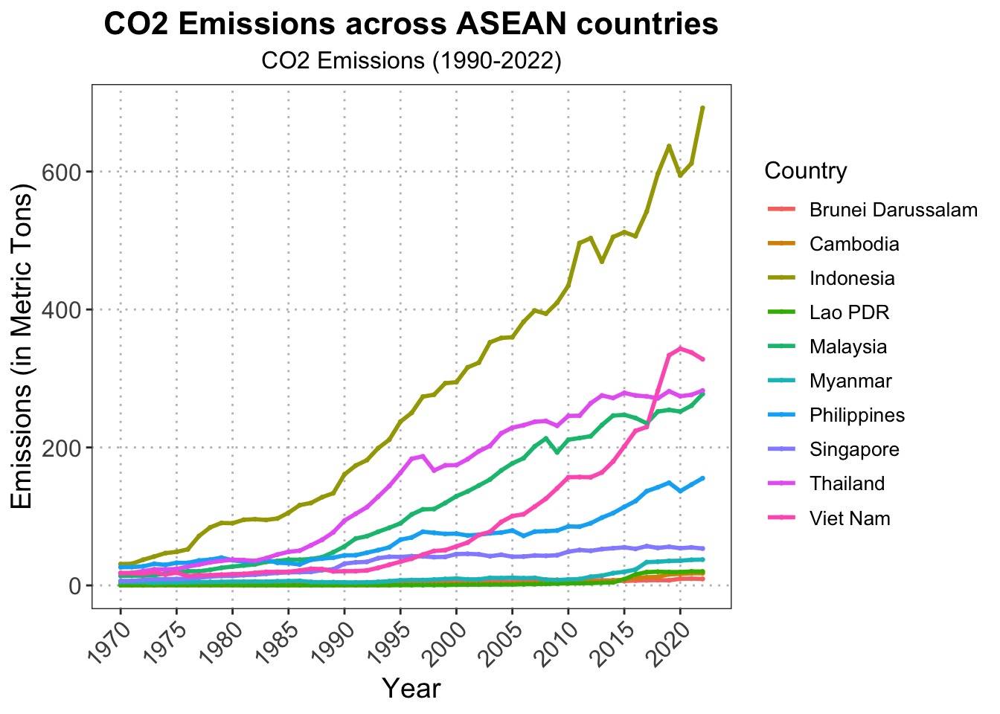

1. Introduction
Global warming is driving significant changes in the climate system. The primary cause of global warming is the accumulation of greenhouse gases (GHG). A growing amount of GHG emissions can be attributed to human activities, such as industrial expansion, transportation, and other economic activities. Among these, carbon dioxide (CO2) emissions are the largest contributors to total GHG emissions (Intergovernmental Panel on Climate Change, 2014). CO2 constitutes more than 72% of global GHG emissions (Yunfeng and Laike, 2010). Furthermore, the CO2 emission share from developing countries was nearly 50 per cent of the world’s total CO2 emissions in 2003 (Martinez-Zarzoso and Maruotti, 2011).
A significant proportion of developing countries is represented within ASEAN, a region characterized by rapid economic development, rising income levels, and other socio-economic drivers. Increased domestic and foreign investments in ASEAN nations have led to a continuous rise in CO2 emissions, contributing to environmental degradation.
Although ASEAN’s CO2 emissions are lower than those of China and the USA, ASEAN is predicted to face severe consequences of global warming, including increasing sea levels (Nordin et al., 2015), which endangered coastal areas and small islands, and the severity of extreme weather events. The population in ASEAN are affected by CO2 emissions because the region is populated along coastlines and heavily reliant on agriculture for livelihoods. Rising temperatures caused by increased CO2 emissions directly affect natural resources and forestry, leading to declining rainfall, heatwaves, droughts, floods, and tropical cyclones (Environment Division of the ASEAN Secretariat, n.d.).
The increase in CO2 emissions in ASEAN has tended to increase occasionally. In 2018, the 5 countries in ASEAN that had the most CO2 emissions were Indonesia, Thailand, Vietnam, Malaysia, and the Philippines, respectively.
Figure 1 can be implied that the countries top five CO2 emission in ASEAN have environmental problems. Moreover, this figure implied about what the factors that make countries top five CO2 emission in ASEAN. To achieve sustainable economic development, their countries should be taken certain step to stop or control CO2 emission (Abdul and Baserat, 2018). As Grossman and Krueger were the first to introduce the idea of the environmental Kuznets curve (EKC) hypothesis to show a negative relationship between economics growth and environmental quality (Arifur et al., 2020). And in 1971, Ehrlich and Holdren were the first introduce the idea of the analysis of key human activities that influence environmental change that is environmental impacts (I) are associated with the population (P), affluence (A), and technology (T) in ecological model called “IPAT” (Koçak et al., 2020). From 2 hypotheses, which are appropriate and can most explain factors affecting CO2 emission on the top 5 CO2 emission in ASEAN is IPAT hypothesis because IPAT theory is the effective device for operationally bridging the differing perspectives between social science and biological science (Dietz and Rosa, 1994). While the EKC ignored the impact of outside borders on the environment since the environment cannot be isolated, the IPAT model assumes the environmental impacts increase linearly with technology (Majeed and Tauqir, 2020).
However, this problem has not been directly studied, but studies on determinate of CO2 emission in ASEAN by using energy indicators (Nordin et al., 2015), and studies by Qaiser et al (2020) on relationship between CO2 emission, energy consumption and economic growth in 5-ASEAN (i.e. Indonesia, Thailand, Singapore, Malaysia, and Philippines) by using the EKC hypothesis. Therefore, this research has the objective to study applies IPAT hypothesis to explore factors affecting CO2 emission on top 5 CO2 emission in ASEAN.
2. Literature Review
2.1 Theory of Environmental Degradation
Nowadays, the most important problem in the world is the environmental problem. The main reason for the environmental degradation problem due to human activities. Therefore, scientists study and create theories, to explain how human activities affect the degradation of the environment. The popular theories, that describe environmental degradation, are the EKC theory and IPAT theory (Carson, 2010).
The EKC theory, or the environmental Kuznets curve, was created by Simon Smith Kuznets, an economist and statistician. This theory describes how the amount of CO2 emissions will increase until the average income reaches a turning point, thus revitalizing environmental quality. Furthermore, the conventional EKC illustrates an inverted U-shaped relationship between environmental quality and economic growth/development (Grossman and Krueger, 1995).
On the contrary, the IPAT theory or The Environmental Impacts (I) on Population (P), Affluence (A), and Technology (T) created by Paul Ralph Ehrlich, Barry Commoner, and John Paul Holdren who are biologists, ecologists, physics and environmental scientist, respectively (York et al., 2003). The IPAT model postulates that environmental impacts increase linearly with population and affluence (York et al., 2007). Moreover, the purpose of this theory is to illustrate the population is a key driving force. It shows humans are important for driving/creating economic activities, technology, political and economic institutions, and attitudes (Stem et al., 1992).
In that case, the IPAT theory is better than the EKC theory, which describes reasons that affect environmental degradation. Dietz and Rosa (1997) believe IPAT theory is an effective device for operationally bridging the differing perspectives between social science and biological science. While the EKC ignored the impact of outside borders on the environment since the environment cannot be isolated, the IPAT model assumes the environmental effects increase linearly with technology (Majeed and Tauqir, 2020). Moreover, biological, ecological and other physical and environmental scientists’ models do not ignore assumptions and create dependence on actuality, while some social science will generally overlook the models (Dietz and Rosa, 1994). Mill and Waite’s (2009) studies did not support EKC’s role of affluence and population on the environment.
2.2 Factors affects to CO2 emission
As humans and human activities are the main reasons in the theory of environmental degradation. Even though environmental degradation cannot be directly measured, most research studies on environmental degradation will use CO2 emission to measure it (York et al., 2003).
Undoubtedly, the population is a significant reason for CO2 emissions due to the impact of the increasing population leading to the use of more energy and oil consumption even with the most managed technology (Paul and John, 1971). Moreover, Mansoor and Sultana (2018), and Guo and Yuan (2011) investigated the increasing population effect on CO2 emission, which led to environmental degradation. While increasing the population concentrated in urban centres, it began to expand urban areas (Lin et al., 2009). This made the migration of the rural population to urbanization thus using more energy and oil consumption led to environmental degradation (Yeh and Liao, 2017). Some studies such as Yeh and Liao (2017), Le et al (2020), Martinez-Zarzoso and Maruotti (2011), and Shaari et al (2020) questioned the urbanisation effect on carbon emission by using the IPAT/STIRPAT tool to analyze, found the relation of urbanization with carbon emission is positive linear.
On the contrary, Le and Quah (2018) and Husain (2016) questioned the urbanisation effect on carbon emission by using the EKC model to analyse and found the relation of urbanization with carbon emission is a U-shape. In other words, low levels of urbanization cause more CO2 emission while levels of urbanization reach a point that will reduce CO2 emission.
The other cause of CO2 emission is human activities, which can be divided into 2 types followed by IPAT theory including affluence and technology (York et al., 2003) which will mention affluence and technology, respectively. Affluence is the production/consumption of the population and affected environment, the best of indicators are income and industrial. Firstly, income can be measured by power consumption. The income illustrates the power of the consumer to afford the product, which is the cause of CO2 emission. When people can more afford the product, it leads to more production which leads to increasing CO2 emission (Guo and Jiang, 2011). In addition, Yeh and Liao (2017) and Le et al (2020) questioned the gross domestic product effect on carbon emission by using the IPAT/STIRPAT tool to analyse and found the relation of gross domestic product with carbon emission is positive linear. Some studies such as Giedre et al (2014), Le and Quah (2018), Husain (2016), Sulaiman and Abdul-Rahim (2018) and Neumayer (2002) estimated the gross domestic product effect on carbon emission by using the EKC model to analyze, found the relation of gross domestic product with carbon emission is positive as well.
Although most studies investigate the positive relationship between gross domestic product and carbon emission, Mansoor and Sultana (2018) investigate that GDP per capita has a negative effect on CO2 emission because GDP enables a country to reach the same production level at a low CO2 emission by development of low-carbon technology. Thus the indicator can be measured, production is industrial. Undoubtedly, CO2 emission comes from production in industry. If countries have more industry, which means increasing production, they have to use energy and oil consumption in the production process which leads to more CO2 emissions. Moreover, industrial illustrates international trade, investment, urbanization and economic growth (Le and Quah, 2018; Saboori et al., 2017). Lin et al (2009) estimated an analysis of the environmental impact of China based on the STIRPAT model. This study found the relationship between the level of industry and CO2 emission is positive, in contrast, Paramati et al (2016) examined developed economy countries that have a negative relationship between industry and CO2 emission because developed economy countries have a high level of technology to reduce CO2 emission.
Finally, the last cause of CO2 emission by human activities is technology. Paul and John (1971) believe that in a technological society, each human individual has a negative impact on the environment. Even though, technology is an indicator that difficult measures to value, most researchers use energy consumption to describe the level of technology, for example, if less energy consumption refers to the level of technology is high (Mansoor and Sultana, 2018). Zhang and Chenh (2009) examined how an increase in energy consumption brings about an increased CO2 emission. In addition, the indicators that use rather energy consumption is energy intensity (Koçak et al., 2020). Wolde-Rufael and Idowu (2017) investigated that China and India have a positive relationship between energy consumption and CO2 emission due to low-level technology. Thus it used high energy intensity in contrast low energy intensity implied the high level of technology. Talbi (2017) and Le et al (2020) express energy consumption illustrate technology, moreover; energy consumption measured by energy intensity investigated energy intensity positive effects on CO2 emission in the short run. On the contrary, Koçak et al (2020) and Xu and Ang (2013) found the reduction in energy intensity represents technological development, which is the key driving force for reducing emissions, and found energy intensity has a negative relationship with CO2 emission.
3.Methodology
3.1 Data
This research taking account of data availability, the panel data of 5 countries in ASEAN (i.e., Thailand, Indonesia, Vietnam, Malaysia, and Philippines) over period 1990-2015 are used to study. The data of CO2 emission (kt), Gross Domestic Product per capita (constant 2015 US$), Industry value added per capita (constant 2015 US$), Population (total), Urban population (% of total population), and Energy intensity level of primary energy (MJ/$2017 PPP GDP) of Thailand, Indonesia, Vietnam, Malaysia, and Philippines were obtained from World Bank.
3.2 Methodology
3.2.1 Theoretical Model
In this section, the research has an objective to study the factors affect to CO2 emission in Thailand, Indonesia, Vietnam, Malaysia, and Philippines. By used theories concerned about environmental degradation called “IPAT”. This theory focuses on key human activities that influence environmental change that can help to explain the objective of research.
However, the analysis of key human activities that influence environmental change by IPAT (Ehrlich and Holdren, 1971) is the model was purely a concept and cannot be used directly in empirical research (Chen et al., 2020). This research used the theory developed from IPAT for describe by mathematic, called the STIRPAT (Stochastic Impacts by Regression on Population, Affluence, and Technology) model (Dietz and Rosa, 1997) to study combined use to be analyzed with econometric models by fixed effect method. For studying the relationship of factors to CO2 emission in Thailand, Indonesia, Vietnam, Malaysia, and Philippines. The basic model is written follow:
\[I=f(P,A,T)\tag{1}\]
By specify where I represent the environmental impact, P represents population, A represents affluence, and T represents technology. This research modifies appropriate for objective of study which can be expressed as:
I is the environmental impact or environmental degradation, measured by CO2 emission (CO2) because it constitutes the largest share of environmental degradation (Shaari et al., 2020).
P is population which it can measure by total population and urbanization. In other word, total population (POP) and urbanization (URB) increase lead to an increased competition for environmental resources which lead to environmental degradation (Dietz and Rosa, 1997). While total population can be measured by total population, urbanization can be measured by urban population.
A is affluence. This research chooses variables by literature review for factors affecting CO2 emission, measured by income and industrial. In other words, affluence is a convenient abbreviation for consumption patterns and some measure of income as the indicator of affluence (Dietz and Rosa, 1997). Income can be proxy by gross domestic product per capita (GDP) because it is the usual measure of economic activity in IPAT models moreover, the relation environmental degradation depends on income increase (World bank, 1992). Additionally, Industrial can illustrate affluence due to it shows terms of trade, export, import, stocks and in terms of production (Fischer-Kowalski et al., 2011). Undoubtedly, industrial can be proxy by industrial value added (IND) due to economic growth will increase energy demand, rising urbanization and industrialization will increase CO2 emission (Le and Quah, 2018; Saboori et al., 2017).
T is technology. Technology in this research chooses variables by literature review for factors affecting CO2 emission, which can be measured by energy intensity (ENE). In simple terms, if use less energy intensity that show technological development (Koçak et al., 2020). Additionally, energy intensity can be measured by energy intensity level of primary energy. If increased energy intensity level of primary energy, increases emissions due to global warming (Jones, 1991). From above mention, function of study can be expressed as:
\[CO2=f(POP,URB,GDP,IND,ENE)\tag{2} \]
\[CO2= POP^{\beta_1} URB^{\beta_1} GDP^{\beta_3} IND^{\beta_4} ENE^{\beta_5} \tag{3} \]
This study predicts, population has a positive effect on CO2 emission (Anwar et al., 2020). Moreover, prediction of urbanization is positive effects on CO2 emission (Martinez-Zarzoso and Maruotti, 2011). Furthermore, prediction of GDP per capita and industry value added are a positive effect on CO2 emission (Le et al., 2020). Lastly, prediction of energy intensity is positive effect on CO2 emission (Cole and Neumayer, 2004).
Equation that modifies explains the factors that affect CO2 emission in 5-ASEAN countries (i.e., Thailand, Indonesia, Vietnam, Malaysia, and Philippines). The variables in the Equation 3 are converted into logarithmic form because the STIRPAT model has to use logarithmic (Dietz and Rosa, 1997). as follows:
\[ \ln CO_{2_{it}} = \beta_0 + \beta_1 \ln POP_{it} + \beta_2 \ln URB_{it} + \beta_3 \ln GDP_{it} + \beta_4 \ln IND_{it} + \beta_5 \ln ENE_{it} + \varepsilon_{it} \tag{4} \]
By specifying where \(CO_{2_{it}}\) represent CO2 emission of Thailand, Indonesia, Vietnam, Malaysia, and Philippines in year t, \(POP_{it}\) represent population of Thailand, Indonesia, Vietnam, Malaysia, and Philippines in year t, \(URB_{it}\) represent the urban population of Thailand, Indonesia, Vietnam, Malaysia, and Philippines in year t, \(GDP_{it}\) represent gross domestic product of Thailand, Indonesia, Vietnam, Malaysia, and Philippines in year t, \(IND_{it}\) represent industrial value added of Thailand, Indonesia, Vietnam, Malaysia, and Philippines in year t, and \(ENE_{it}\) represents energy intensity of Thailand, Indonesia, Vietnam, Malaysia, and Philippines in year t. \(\beta_0\) represents a constant term, 1,2,3,4,5 are the estimated parameters, and \(\varepsilon_{it}\) is the error term in year t. i is the 5 countries in ASEAN (i.e., Thailand, Indonesia, Vietnam, Malaysia, and Philippines). where t is time (t = 1,2,3,…,26) use panel data. Estimated the equation by using Ridge Regression because predictors are strong correlation consequently, ridge regression is suitable for this issue.
| ln_ene | ln_gdp | ln_pop | ln_urb | ln_ind | |
|---|---|---|---|---|---|
| ln_ene | 1.0000000 | -0.0123012 | -0.4461180 | 0.2835165 | 0.1712007 |
| ln_gdp | -0.0123012 | 1.0000000 | 0.5971792 | 0.3357580 | 0.9690089 |
| ln_pop | -0.4461180 | 0.5971792 | 1.0000000 | -0.3699070 | 0.5120299 |
| ln_urb | 0.2835165 | 0.3357580 | -0.3699070 | 1.0000000 | 0.3965863 |
| ln_ind | 0.1712007 | 0.9690089 | 0.5120299 | 0.3965863 | 1.0000000 |
This matrix shows ln_gdp and ln_ind have a very strong correlation (\(r = 0.969\)), this indicates severe multicollinearity. While the other correlations are not as high as \(r > 0.8\) , there are some moderate relationships.
4. Description and discussion of the results
The result from study the factors affect the CO2 emission in 5-ASEAN countries. Expressed as analysis results.
| Variable | Coefficient |
|---|---|
| (Intercept) | -5032.847912 |
| ln_ene | 107.617964 |
| ln_gdp | 75.802601 |
| ln_pop | 22.656423 |
| ln_urb | -3.369899 |
| ln_ind | 106.214714 |
The Ridge Regression model explains approximately $ R^2 = 0.932 $ of the variance in the dependent variable.
The Ridge Regression model equation is expressed as follows:
\[ \ln(y) = -5032.85 + 107.62 \cdot \ln(ene) + 75.80 \cdot \ln(gdp) + 22.66 \cdot \ln(pop) - 3.37 \cdot \ln(urb) + 106.21 \cdot \ln(ind) \]
The table illustrates the result regression of factors that affect CO2 emission in 5-ASEAN countries, including Thailand, Indonesia, Vietnam, Malaysia, and Philippines by 5 factors.
Overall, R-squares within is 0.9324 in other words, all factors can describe CO2 emission with 93.24% by ridge regression while 6.76% explained by other factors.
From the result, it can be seen that population has a positive effect on CO2 emission refer to when population increases 1 percent, will be CO2 emission increases 22.66 percent. This result matches the hypothesis, the relation of population with carbon emission is positive. Moreover, the result consist study with Mansoor and Sultana (2018) question Impact of Population, GDP and Energy Consumption on Carbon Emissions: Evidence from Pakistan Using an Analytic Tool IPAT, examined the impact of population on CO2 emissions is positive, which confirmed that high population growth put a burden on environment in the form of high mass CO2 emissions, hence this study suggests limiting the population by family planning process in a country. Furthermore, Guo and Yuan (2011) questioned the relationship between CO2 Emissions, Economic Scale, Technology, Income and Population in China by using the IPAT model to analyze, found the population is positive relation with CO2 emission.
Urbanization has a negative effect on CO2 emission that is urbanization increases 1 percent, will be CO2 emission reduce -3.37 percent. This result does not match the hypothesis, the relation of urbanization with carbon emission is positive. The result of study conflict with Yeh and Liao (2017), Le et al (2020), Martinez-Zarzoso and Maruotti (2011), and Shaari et al (2020) questioned the urbanization effect to carbon emission by using IPAT/STIRPAT tool to analyze, found the relation of urbanization with carbon emission is positive linear due to expansion of urbanization led to use more natural resource. Although, this result does not match hypothesis and other studies result, Martinez-Zarzoso and Maruotti (2011) found the same problem, urbanization is negative relation with carbon emission then this study used more sophisticated analysis to investigate this relationship in depth, investigated a relationship between urbanization and CO2 emission is U-shaped thus this study suggests the problem are the data of urbanization in countries that studied do not appropriate with the IPAT model but appropriate with the EKC model. In conclusion, this reason might the cause studies to have different results.
Gross domestic product has a positive effect on CO2 emission means when gross domestic product increases 1 percent, will be CO2 emission increase 75.80 percent. This result matches the hypothesis, the relation of gross domestic product with carbon emission is positive. Moreover, the result consist study with Yeh and Liao (2017) and Le et al (2020) questioned gross domestic product impact to carbon emission by using IPAT/STIRPAT tool to analyze, found the relation of gross domestic product with carbon emission is positive relation. While Giedre et al (2014), Le and Quah (2018), Husain (2016), and Neumayer (2002) investigate the positive relationship between GDP and carbon emission by using EKC model as well. On the contrary, Mansoor and Sultana (2018) investigate GDP per capita has negative affect on CO2 emission due to GDP enable country to reach the same production level at low CO2 emission by development of low-carbon technology. While this study focuses on 5-ASEAN countries by using panel data and using fixed effects to analyze, Mansoor and Sultana (2018) study focus on Pakistan by using time-serie data and use ARDL to analyze relation in long-run. In summary, this reason causes studies to have different results.
Industrial value added has a positive effect on CO2 emission consists of when industrial value added increases 1 percent, will be CO2 emission increase 106.21 percent. This result matches the hypothesis, the relation of industrial value added with carbon emission is positive. Moreover, the result consists of study with Le et al (2020) surveyed industry has positive relation with CO2 emission. Although, Paramati et al (2016) examined developed economy countries that have negative relationships between industry and CO2 emission, developing economy countries have positive relationships based on the STIRPAT model. This is the reason to relates with the result of study due to 5-ASEAN countries such as Thailand, Indonesia, Vietnam, Malaysia, and Philippines are developing countries.
Energy intensity has a positive effect on CO2 emission consists of when energy intensity increases 1 percent, will be CO2 emission increase 107.62 percent. This result matches the hypothesis, the relation of energy intensity with carbon emission is positive. Moreover, the result consist study with Talbi (2017) sounded energy consumption illustrate technology, moreover energy consumption measured by energy intensity, investigated energy intensity positive effects with CO2 emission in short run. Moreover, Le et al (2020) examined energy intensity has positive relation with CO2 emission. On the contrary, Koçak et al (2020) sounded the reduction in energy intensity represent technological development, found energy intensity has a negative relationship with CO2 emission. While, this study focuses on 5-ASEAN countries, Koçak et al (2020) study focus on top 10 most visited countries in 2017 which is most developed countries. Moreover, developed countries have high technology to use less energy intensity consist study with Bilgili et al (2017) examined decreasing of energy intensity due to developed technology. To sum up, this reason causes studies to have different results.
5. Conclusion
The purpose of this study is factors affect CO2 emission in 5-ASEAN countries. From the result, the causes of CO2 emission in 5-ASEAN countries are population, urbanization, gross domestic product, industry, and energy intensity, affected to CO2 emission by the same direction while urbanization contrarily affects CO2 emission. Moreover, the results of this study illustrate the IPAT hypothesis, which can examine causes of environmental degradation to reflect environmental sustainability.
The results suggest total factors affect CO2 emission. Although, the most factor effect CO2 emission is population, nobody can control about having children due to external factors that cannot control human thoughts and decisions. As the result, the government should dramatically support R&D of technology to develop technology for less CO2 emission due to developed technology can solve CO2 emission from GDP per capita and industrial. Furthermore, the government should announce the policy concerning carbon emission such as environmental tax for controlling the industries to cooperate with the government for use of low-carbon technology to reduce carbon emission.
Suggestions for future research are using the IPAT model to analyze. Be careful the data of urbanization to analyze due to the relationship is maybe non-linear and the IPAT model has a problem about autocorrelation from theory thus the future research should find the way to solve this problem.
References
Asean Cooperation on Environment. (n.d.). ASEAN Cooperation on Climate Change. Environment Division of the ASEAN Secretariat. Retrieved from https://environment.asean.org/awgcc/
Bilgili, F., Koçak, E., Bulut, Ü., & Kuloğlu, A. (2017). The impact of urbanization on energy intensity: Panel data evidence considering cross-sectional dependence and heterogeneity. Energy, 133, 242-256.
Carson, R. T. (2010). The Environmental Kuznets Curve: Seeking Empirical Regularity and Theoretical Structure. Review of Environmental Economics and Policy, 4(1).
Chen, Y., Lee, C., & Lee, C. (2020). Does technological innovation reduce CO2 emission?Cross-country evidence. Journal of Cleaner Production, 263, 121550.
Cole, M. A., & Neumayer, E. (2004). Examining the Impact of Demographic Factors on Air Pollution. Population and Environment, 26(1), 5–21.
Dietz, T. & Rosa, E. A. (1994). Rethinking the Environmental Impacts of Population, Affluence and Technology, Human Ecology Review, 1, 277-300.
Dietz, T. & Rosa, E. A. (1997). Effect of population and affluence on CO2 emission, Ecology, 94, 175-179.
Dietz, T. & Rosa, E. A. (2007). Driving the human ecological footprint. Frontiers in Ecology and the Environment, 5(1), 13-18.
Fischer-Kowalski, M., Krausmann, F., Giljum, S., Lutter, S., Mayer, A., Bringezu, S., … Weisz, H. (2011). Methodology and Indicators of Economy-wide Material Flow Accounting. Journal of Industrial Ecology, 15(6), 855-876.
Giedre, L., Manuela, T. & Pranas, V. (2014). Greenhouse gases emissions and economic growth - evidence substantiating the presence of environmental Kuznets curve in the EU. Technological and Economic Development of Economy, 20(1), 65-78.
Grossman, G. M. & Krueger, A. (1995). Economic Growth and the Environment. The Quarterly Journal of Economics, 11(2), 353-377.
Guo, H. & Jiang, Y. (2011). The Relationship between CO2 emissions, Economic Scale, Technology, Income and Population in China. Procedia Environmental Sciences, 11, 1183-1188.
Husain, S. (2016). Testing the long run relationship between CO2 emission, Energy consumption and Economics Growth for Bangladesh. An ARDL Bound Testing Approach. British Journal of Economics, Finance and Management Sciences, 12(2), 12-23.
Inmaculada, M., Inmaculada, Z. & Antonello M. (2011). The impact of urbanization on CO2 emissions: Evidence from developing countries. Ecological Economics, 70, 1344-1353.
Intergovernmental Panel on Climate Change. (2014) Climate Change 2014 Mitigation of Climate Change. New York, Cambridge University Press. Jones, D. W. (1991). How urbanization affects energy-use in developing countries. Energy Policy, 19(7), 621-630. Koçak, E., Ulucak, R., & Ulucak, Z. Ş. (2020). The impact of tourism developments on CO2 emission: An advanced panel data estimation. Tourism Management Perspectives, 33, 100611.
Le, T.-H., Le, H.-C., & Taghizadeh-Hesary, F. (2020). Does financial inclusion impact CO2 emission? Evidence from Asia. Finance Research Letters, 34, 10145.
Le, T. & Quah, E. (2018). Income level and the emission, energy, and growth nexus: Evidence from Asia and the Pacific. International Economics, 156, 193-205.
Lin, S., Zhao, D. & Marinova, A. (2009). Analysis of the environmental impact of China based on STIRPAT model. Environmental Impact Assessment Review, 29, 341-347.
Luukkanen, J. & Kaivo-oja, J. (2002). ASEAN tigers and sustainability of energy use-decomposition analysis of energy and CO2 efficiency dynamics. Energy Policy, 30(4), 281-292
Majeed, M. T. & Tauqir, A. (2020). Effects of Urbanization, Industrialization, Economic Growth, Energy Consumption and Financial Development on Carbon Emission: An Extended STIRPAT Model for Heterogenous Income Groups. Pakistan Journal of Commerce and Social Sciences, 14(3), 652-681.
Mansoor, A. & Sultana, B. (2018). Impact of Population, GDP and Energy Consumption on Carbon Emission: Evidence from Pakistan Using and Analytic Tool IPAT. Asian Journal of Economics and Empirical Research, 5(2), 183-190.
Martínez-Zarzoso, I., & Maruotti, A. (2011). The impact of urbanization on CO2 emissions: Evidence from developing countries. Ecological Economics, 70(7), 1344-1353.
Meangbua, O., Dhakal, S., & Kuwornu, J. K. M. (2019). Factors influencing energy requirements and CO2 emissions of households in Thailand: A panel data analysis. Energy Policy, 129, 521–531.
Mills, J.H., & Wate, T. A. (2009). Economic prosperity, biodiversity conservation, and the environmental Kuznets curve. Ecological Economics, 68(7), 2087-2095.
Munir, Q., Lean, H. H., Smyth, R. (2020). Co2 emissions, energy consumption and economic growth in the ASEAN-5 countries: A cross-sectional dependence approach. Energy Economics, 85, 104571.
Neumayer, E. (2002). Can natural factors explain any cross-country difference in carbon dioxide emissions?. Energy Policy, 30, 7-12.
Nordin, S. K. S., Samat, K. F., Ismail, S. F., Hamzah, K., Halim, B. A., & Kun, S. S. (2015). Determinants of CO2 emissions in ASEAN countries using energy and mining indicators. AIP Conference Proceeding, 1660(1).
Paramati, S. R., Alam, Md. S. & Chen, C. (2016). The Effects of Tourism on Economic Growth and CO2 Emission: A Comparison between Developed and Developing Economies. Journal of Travel Research, 56(6), 712-724.
Pual, R. E. & John, P.H. (1971). Impact of Population Growth. Science, 171(3977), 1212-1217.
Rabiul, I., Ahmad, B. A. G., & Emil, M. (2017). Carbon Dioxide Emission, Energy Consumption, Economic Growth, Population, Poverty and Forest Area: Evidence from Panel Data Analysis. International Journal of Energy Economics and Policy, 7(4), 99-106.
Rahman, A., Murad, S. M. W., Ahmad, F., & Wang, X. (2020). Evaluating the EKC Hypothesis for the BCIM-EC Member Countries under the Belt and Road Initiative. Sustainability, 12(4), 1478.
Saboori, B., Rasoulinezhad, E., & Sung, J. (2017). The nexus of oil consumption, CO2 emissions and economic growth in China, Japan and South Korea. Environmental Science and Pollution Research, 24(8), 7436-7455.
Shaari, M. S., Karim, Z. A., & Abidin, N. Z. (2020). The effects of Energy Consumption and National Output on CO2 emissions: New Evidence from OIC Countries Using a Panel ARDL Analysis. sustainability, 12, 3312.
Shafik, N. (1994). Economic Development And Environmental Quality: An Econometric Analysis. Oxford Economic Paper, 46, 757-773.
Stern, D. I. (2004). The rise and fall of the environmental Kuznets curve. World Development, 32, 1419-1439.
Stern, P. C. (1993). A Second Environmental Science: Human-Environment Interactions. Science, 260(5116), 1897-1899.
Sulaiman, C. & Abdul-Rahim, A. S. (2018). Population Growth and CO2 emission in Nigeria: A Recursive ARDL Approach. SAGE Open, 8(2), 215824401876591.
Talbi, B. (2017). CO2 emission reduction in road transport sector in Tunisia. Renewable and Sustainable Energy Reviews, 69, 232-238.
The Global Carbon Atlas. CO2 emission in ASEAN during 1960 to 2018. Retrieved from http://www.globalcarbonatlas.org/en/CO2-emissions
Wolde-Rufael, Y. & Idowu, S. (2017). Income distribution and CO2 emission: A comparative analysis for China and India. Renewable and Sustainable Energy Reviews, 74, 1336-1345.
World Bank Indicators. (1992). World Development Report Development and the Environment. World Bank. Retrieved from http://documents1.worldbank.org/curated/en/995041468 323374213/pdf/105170REPLACEMENT0WDR01992.pdf
Xu, X. Y. & Ang, B. W. (2013). Index decomposition analysis applied to CO2 emission studies. Ecological Economics, 93, 313-329.
Yeh, J. & L, C. (2017). Impact of population and economic growth on carbon emission in Taiwan using and analytic tool STIRPAT. Sustainable Environment Research, 27, 41-48.
York, R., Rosa, E. A., & Dietz, T. (2003). STIRPAT, IPAT and ImPACT: analytic tools for unpacking the driving forces of environmental impacts. Ecological Economics, 46, 351-365.
Zhang, X. & Cheng, X. (2009). Energy consumption, carbon emission, and economic growth in China. Ecological Economics, 68, 2706-2712.